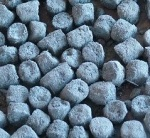
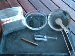
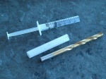
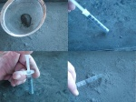
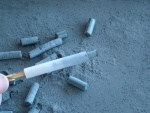
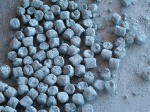

Pumped stars
From PyroGuide
|
 Making pumped stars is a relatively easy process that requires some patience. There are various methods, some easier than others, however in this example we are going to be using tools that can be easily obtained from around the house. It is best to make stars with small amounts of composition, as you will be surprised how many it can make. Also, try not to make stars too large, as this will increase the drying time that may result in the stars cracking. Furthermore the burn time will increase and the stars may fall to the ground while they are still burning if they are not ignited at a high enough altitude. |
[edit] Materials Tools |
|
 Star pump |
[edit] Method Cut the end off the syringe and retract the plunger. Fill the open end of the syringe by pressing it several times into the star composition. Depending on the density of your star composition it may not be possible to completely fill the syringe. To remove trapped air, place the star pump on a piece of paper on a flat surface or on the tray and firmly push the plunger downwards. Hold it for a few seconds and firmly compress the composition. |
|
 Take a scoop or two of meal powder and place this into your sieve. Now dust the surface of your drying tray evenly with the meal powder, this will prevent the stars sticking when they are drying. Using your star pump press the composition out onto the drying tray. There are two ways in which you can cut your stars, you can either press a small amount out of the tube then cut with a razor blade to achieve the desired star size, or you can press out the entire contents and cut with a razor blade whilst it is on the tray. You can either use a syringe to pump the stars or you can use a small length of plastic tube and press out the contents with a drill bit or piece of wooden dowel. |
|
 Once you have finished pumping all your stars, dust the stars again with more meal powder. Gently shake the tray in various directions to roll the stars in the meal powder ensuring an even coverage. This will help the stars ignite at effect time. It is usually best to dry the stars first, even if you intend to coat the stars with more layers of composition. If you don't, the larger stars may take a very long time to dry, since the moisture in the core of the star will have to migrate all the way to the surface to evaporate. Generally, it is best to dry stars slowly at first, and more quickly once they are fairly dry. Do not speed up the drying with heat, it can be dangerous if the stars become hot and ignite, or it may crack your stars! Heat can also cause stars to become driven in, where moisture gets trapped in the core of the star. Stars are best dried in a cool, dark place. It takes patience. |

{kind=link}
{kind=link}
{kind=link}
{kind=link}
{kind=link}
{kind=link}